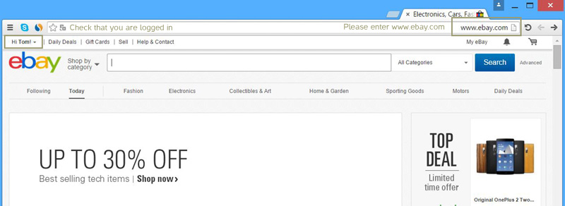
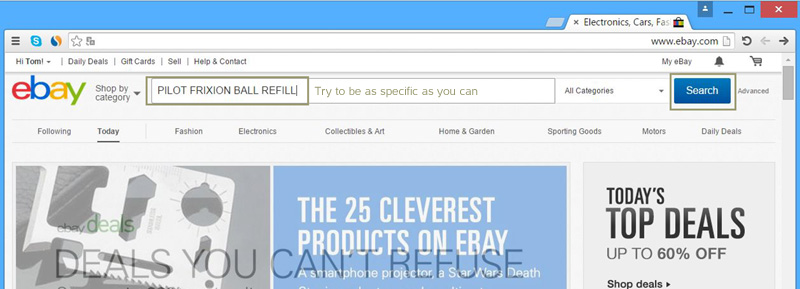
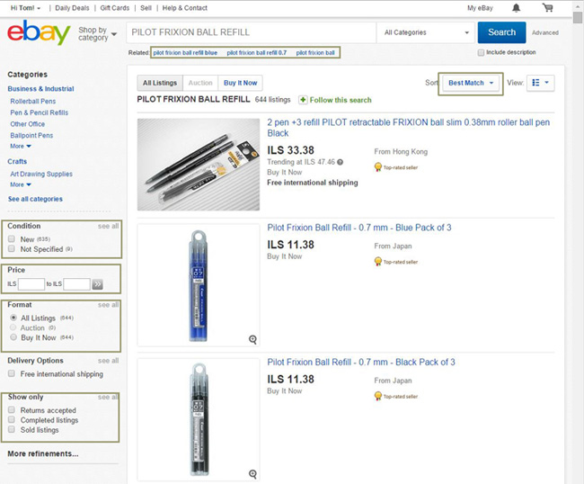
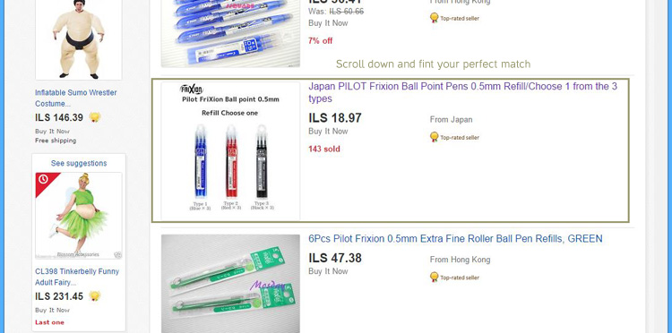
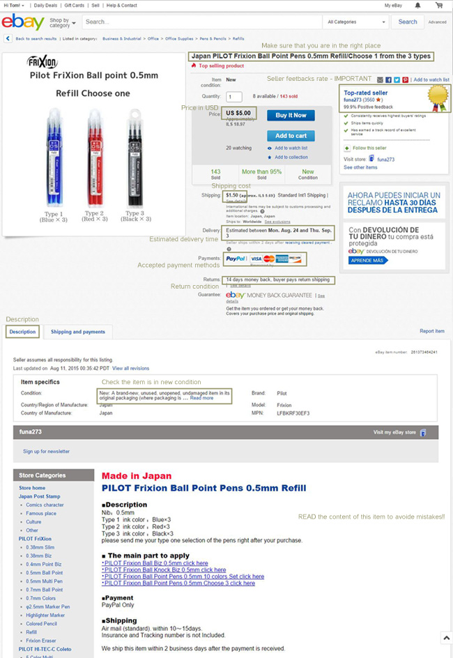
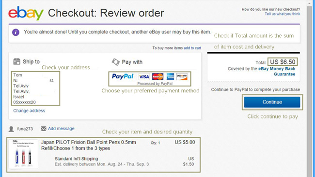
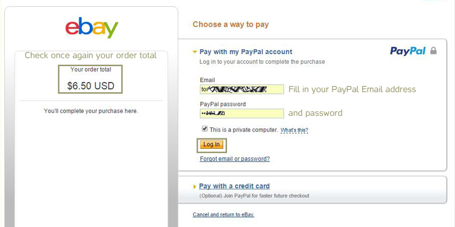
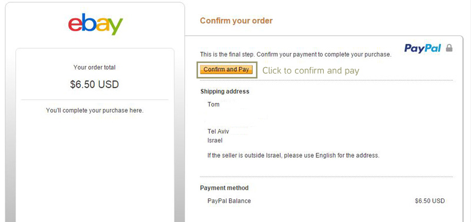
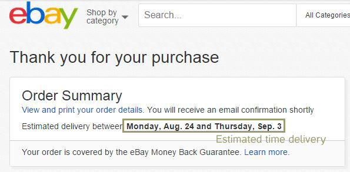

Search and Buy it
Hey, In this tutorial I will teach you how to buy from ebay site.
Make sure you have completed all the required installations before you start.
If you have not, please visit :
Installations?

First step : Open your internet browser and enter www.ebay.com.
Note: Check that you are logged in with your personal ebay account.
If you don’t, please sign in to continue.
First

Step TwoTo start searching, click on the white box and write what you are looking for.
Note: only typed-in characters are valid.
For example : "Pilot Frixion Ball Refill" is a refill for a special pen I have. So I tried to be as specific as I can about the item.
After it, Click on the "Search"
Second
Step Three: ebay will show you the best search result which sorted by "Best Match". Those result considers your preferred price, time to deliver and credibility of the seller as well.
Note: We strongly suggest to buy from the "Best Match" results.
Note: You may change the parameters in the left side of the screen.
In the results you will find variety of parameters you can define to make you search more specific:
Note: We strongly suggest to buy from the "Best Match" results.
Note: You may change the parameters in the left side of the screen.
In the results you will find variety of parameters you can define to make you search more specific:
- More suggestions for search results
- Condition of item
- Price upper and lower bound
- and more..
Third

Step Four: After setting up all desired parameters, I scrolled down and found my perfect match. :
Japan PILOT Frixion Ball Point Pens 0.5mm Refill/Choose 1 from the 3 types.
But there are still several things that we should be aware of.
Fourth

Step Five : Your desired item will be shown and you will be able to read more details about it.
The most important things to be aware of are signed in the following picture with brown rectangle.
Step Five : Your desired item will be shown and you will be able to read more details about it.
The most important things to be aware of are signed in the following picture with brown rectangle.
Fifth

Step Six : This window will review you order.
Please verify :
Your home address, your payment method and Total amount is the sum of item cost and delivery as well.
Click "Continue" when done.
Six

Step Seven : ebay now will redirect you to your installed PayPal account in order to proceed with this transaction.
Check once again your order total amount.
This amount will be charged off you PayPal account.
Step Seven : ebay now will redirect you to your installed PayPal account in order to proceed with this transaction.
Check once again your order total amount.
This amount will be charged off you PayPal account.
Seven

Step Eight : After connected with PayPal account,
please press on the "Confirm and Pay" button.
Step Eight : After connected with PayPal account,
please press on the "Confirm and Pay" button.
Eight

Final Step :
Congratulations! You did it! You purchased a new item!
Note: The estimated delivery time will be shown
Final